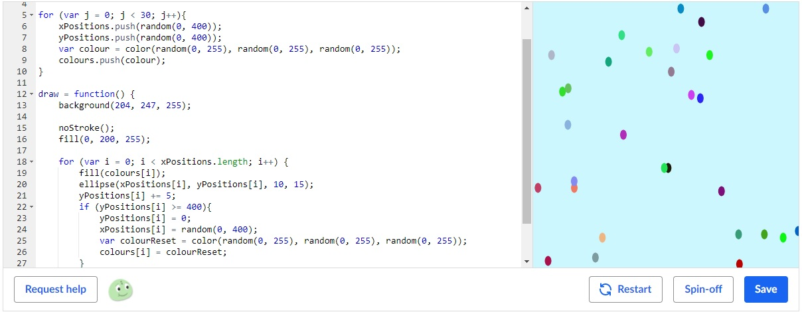
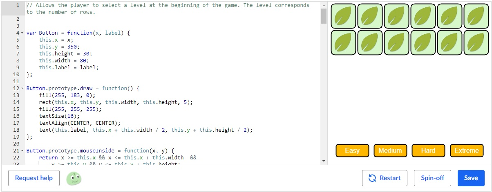
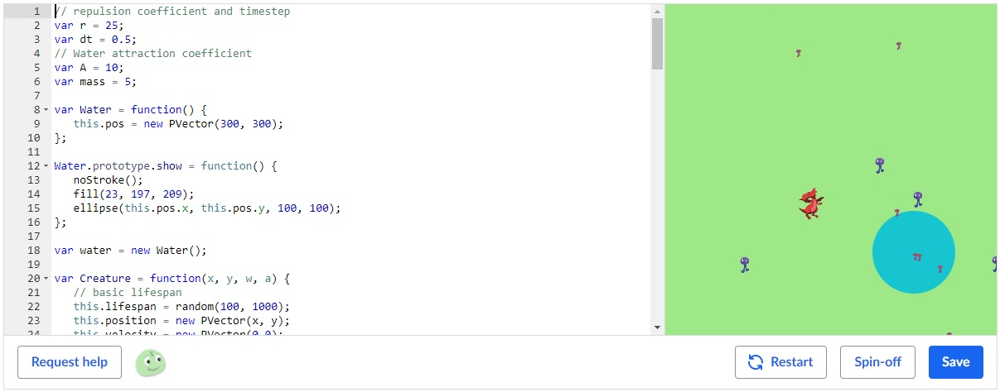
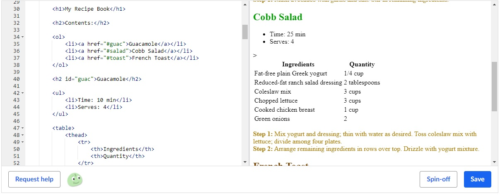

Introduction to JavaScript: Drawing and Animation
The JavaScript introduction course was incredibly useful in providing me with a good and understandable introduction into a language I had never used before. The course taught me all of the basics I needed to then go onto more interesting programs such as the ones in the simulations and games and visualisations courses. Object oriented design, for example, was a concept I had never seen, and this course provided me with an introduction to the practice so that I could use this extremely useful tool and concept every time I work on programs that would benefit form it in the future. While I would say I am beyond the concepts of this course now, the habit of learning something and immediately trying it out, as was done in the Khan Academy environment, is something I can take and apply not only to when I will want to learn a new programming language, but in just about every facet of life as well.
Advanced JavaScript: Games and Visualizations
The JavaScript games and visualizations course allowed me to understand how more advanced visualizations can be made on a JS canvas, such as coordinate transformations and rotations for moving objects, and other user interfaces such as buttons for changing something in the middle of a program. It also demonstrated to me not only the relative ease of making such visualizations but the merit and inerest in doing them, as before I only really expected to use programming to generate values logged on console, without any visual aids or indicators. As someone who plans to use these kinds of programs as a tool for more advanced physical simulations and scenarios, specifically fluid dynamics or CFD I intend to keep using the fundamentals of these concepts in contructing programs. These programs would then be easier to understand and read. I could also make use of the buttons and other user interface methods I learnt about to change parameters or variables mid-program, as one might in a real physical experiment, instead of having to stop the program and change the code every time.
Advanced JavaScript: Natural Simulations
Because I intend to use programming mostly for creating physical simulations in fluids, this was by far the most meaningful module on Khan Academy for me. The module taught me many things about concepts in physical simulations such as vectors. I knew what vectors were before this course but did not even know they could really be used in computer programs, or at least not in a built-in way. Along with the many other things such as forces, rotations, and particle system (that last one, it turns out, is really useful in fluid simulations), the course gave me a basic and fundamental understanding of how physiscists go about making simulations like these, albeit more complicated ones. I plan to use pretty much every single concept learnt in the module extensively in the future, as I continue my studies to focus on more complicated physical systems, which could be better understood through simulations I can try to create.
Introduction to HTML/CSS: Making Webpages
The HTML/CSS course was, well, what allowed me to create this very website. Although all concepts were quite basic, and I intend to further my web development skills by following more advanced courses, the course allowed me to make basic websites such as this one. In the future, I plan to continue to learn CSS and HTML, and apply what I learn in making even more intricate and complicated websites, such as additional portfolios (or adding to this one), a curriculum vitae, or some other website (perhaps I may even have my own laboratory someday and could create a website for it!).
You can view all of my projects here.